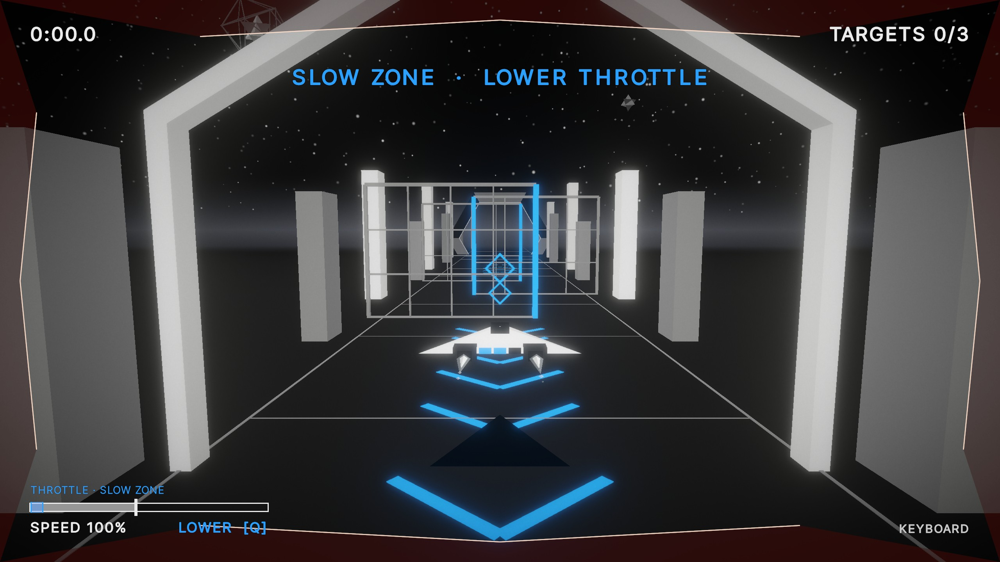
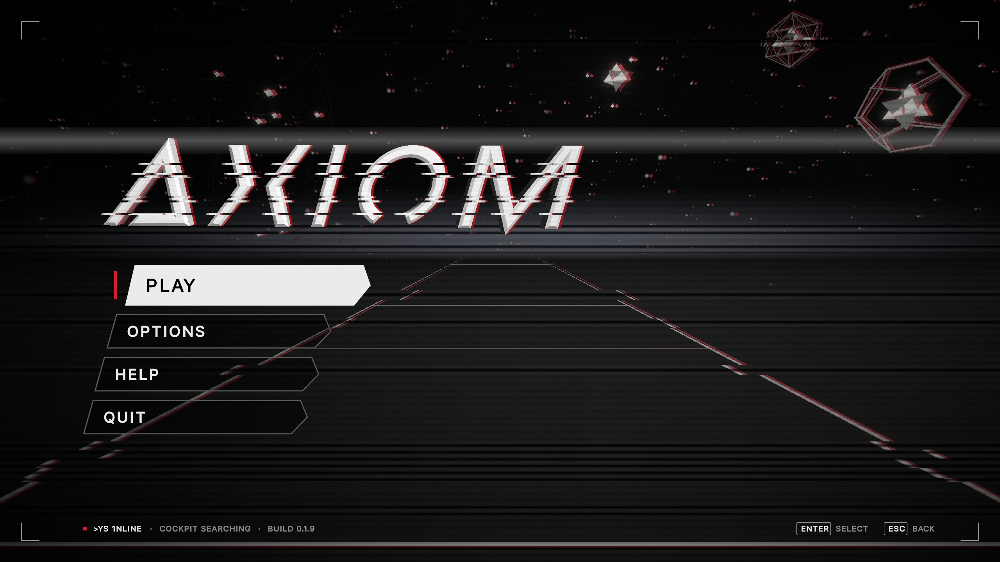

Interface &
interaction.
A geometric flight game.
A physical cockpit.
One visual
language.

Screen flow
Pause returns directly to flight. Options and Help open from the main menu or Pause. Options leads to controller calibration. Results offers Retry or Main menu; Continue is available when a next level is configured.
Losing focus or disconnecting the controller pauses the run. Mouse and keyboard navigate menus; cockpit menu navigation is still in development.
UI in play.
On the ship, in the world, around the screen. Select a layer to see what it tells you.
- Shield segmentsThree blue cells on the ship's tail. Take a hit, lose a cell.
- Engine exhaustThe jets stretch with the throttle you ask for, before the ship has actually sped up.
- Aim reticlesTwo diamonds at 10 m and 25 m. Line them up on a target and fire.
- Floor chevronsBlue chevrons lead you into slow and fast sections.
- Run timeTicks up from the start line; par time shows on the results.
- TargetsHow many of the course's targets you've broken.
- Zone bannerSays what the section wants. Here: slow down.
- Throttle gaugeSpeed bar with the recommended band and a hint, including the key to press.
- Input badgeKeyboard or controller, and a warning if the throttle sensor drops out.
- Damage pulseAngular red edges flash for half a second on a hit. Shape and timing carry the warning, not just the colour.
Four kinds of interface
Diegetic elements belong to the game world. Spatial cues sit in 3D but serve the player. The non-diegetic HUD gives precise screen-based readouts. Meta effects communicate the ship's condition through the screen itself.
Blue guides. Red warns. Shape, text and timing support the colour cues. Classification follows Fagerholt and Lorentzon’s Beyond the HUD (2009).
Feedback you can read.
One event, more than one cue.


A shield hit: brief, unmistakable, then out of the way.
ScreenAngular red pulse.
WorldShip blink and one lost shield cell.
ControllerHit tone and an LCD warning.
All feedback channels
| Event | Screen | World | Buzzer | Cockpit LCD | Lights and rumble |
|---|---|---|---|---|---|
| Shield hit | Red edge pulse | Ship blinks, a tail cell goes dark | Short tone, long and low on the last one | SHIELD HIT 2/3 | Shield light out, rumble jolt |
| Throttle zone | Banner, gauge band, RAISE / LOWER hint | Blue floor chevrons | High tone for fast, low for slow | Band on the speed bar, arrows | SLOW / FAST light, range on the throttle lights |
| Collision ahead | PROXIMITY label pulses | Parking-sensor beeps, then a solid tone | ! PROXIMITY ! | PROX light blinks with the beeps | |
| Engine demand | Speed readout | Exhaust jets stretch | Speed bar and percentage | Rumble grows with speed, lever light | |
| Sensor or link lost | Warning badge, or a pause with a notice | Warning tone | HOLDING CRUISE, RECONNECTED | LINK light |
Filled markers: implemented. Outlined markers: planned game integration; the hardware has been bench-tested.
Same world.
Different screen.
Switch to Arcade Mode. The world, title and interface share the glow and curvature of one CRT.
Drag to compare. Expand for a closer look.
Visual layers.
Start with the finished frame. Peel it back.
- GeometryFlat-shaded constructs against a dark sky.
- HazeFog and sky share a colour, softening the distant floor.
- AtmosphereHorizon glow, stars and drifting dust add depth.
- GradeTonemapping, exposure and contrast bring the scene together.
- BloomBright geometry spills a little light into the dark.
- FinishVignette and grain finish the image.
- InterfaceThe title, controls and status line complete the standard-mode frame.


A brief interruption.
A tear in the title. A red echo. Then calm. The menu’s glitch waits until you stop interacting.
Timing & rendering
An 18-frame sequence at 25 fps: 0.72 seconds, scheduled every 8–12 seconds while idle.
Standard Mode draws UI after scene effects. Arcade Mode composites the interface before the CRT pass, so menus and HUD curve with the image. Pointer positions are mapped to the curved controls.
A physical interface.
A stick, throttle and a second instrument panel. The cockpit brings flight into your hands.
- Stick and FIRESteer and hold FIRE to shoot. The twist axis has no game function yet.
- Throttle leverMeasured by an ultrasonic sensor. Push forward to go faster; cruise sits in the middle.
- LCDA second instrument panel: speed, shield, targets and time, swapping in guidance and warnings.
- MENUPause in flight. Back/menu navigation is planned.
- BuzzerTones for hits, zones, proximity and a lost sensor. Can be muted in Options.
- Throttle lightsPlanned: a dot at the lever and a recommended throttle range.
- Shield lightsPlanned: one light per shield segment.
- Warning lightsPlanned: LINK, SLOW, FAST, PROX and EMP cues behind printed labels.
- Master armPlanned: arm to launch; flip to safe to pause.
- EMP domePlanned: a once-per-run blast with a ready lamp.
- RumblePlanned: engine rumble and a jolt on hits.
Enclosure concept render. Components are bench-tested; the enclosure and remaining game integrations are in progress.
The right message.
At the right moment.
Speed and status give way to guidance, damage and warnings. Select a state to try the display.
Illustrative LCD states. The physical display uses custom glyphs.
Evolution.
From the first blockout to the current visual language.
- BlockoutArchive: the first menu, with a flat title and a bare scene.
- Early 3DArchive: an earlier title treatment and lighting pass.
- CurrentThe updated geometric wordmark, atmosphere and interface.
The level, then and now.
Different captures, one evolving world.